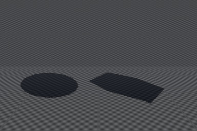
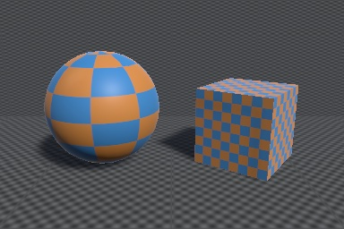
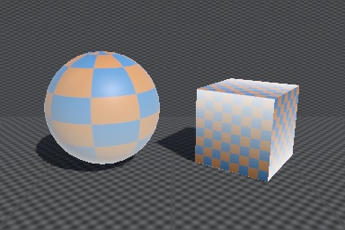
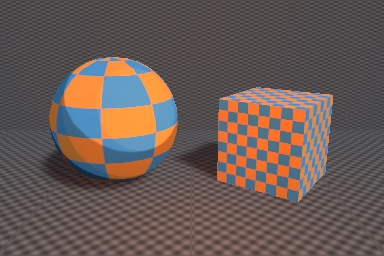
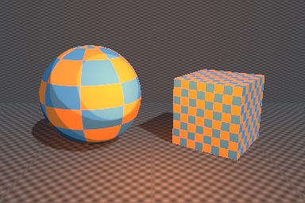

Guide · Unity 6 · URP 17
How to convert surface shaders to URP
URP does not run surface shaders. A shader with #pragma surface renders pink as soon as you switch a project
to URP, and Unity's Render Pipeline Converter only upgrades materials that use Unity's own Built-in shaders. This guide rewrites a surface
shader as a URP shader by hand, explains what the surface shader compiler used to generate for you, and covers custom lighting functions.
Why surface shaders stop working
A surface shader is not really a shader. It is input for a code generator in the Built-in Render Pipeline: you write a surf()
function and Unity generates the real passes from it (ForwardBase, ForwardAdd, ShadowCaster, Deferred, Meta). URP has no such generator,
and it does not render passes tagged for the Built-in pipeline, so materials using the shader fall back to URP's pink error shader.
You have three ways out:
- Rebuild it in Shader Graph. Fine for a few simple shaders; custom lighting needs Custom Function nodes, and you redo every shader by hand.
- Rewrite it as a URP HLSL shader. That is what this guide does. It keeps your code and gives you full control.
- Convert it automatically with URP Migrator, which writes the URP passes around your existing
surf()and lighting functions.
What the surface shader compiler did for you
Everything below was generated or included automatically. In URP you write it yourself:
| Built-in surface shader | URP equivalent |
|---|---|
CGPROGRAM … ENDCG, #include "UnityCG.cginc" | HLSLPROGRAM … ENDHLSL, #include "Packages/com.unity.render-pipelines.universal/ShaderLibrary/Core.hlsl" |
#pragma surface surf Standard | A UniversalForwardOnly pass whose fragment shader calls UniversalFragmentPBR(InputData, SurfaceData) |
Lambert / BlinnPhong lighting | UniversalFragmentBlinnPhong(InputData, SurfaceData) |
SurfaceOutputStandard o (Albedo, Normal, Emission, Metallic, Smoothness, Occlusion, Alpha) | SurfaceData (albedo, normalTS, emission, metallic, smoothness, occlusion, alpha) |
struct Input (uv_MainTex, worldPos, worldNormal, viewDir…) | Your own Varyings struct, filled in the vertex shader, plus InputData |
sampler2D _MainTex; and tex2D(_MainTex, uv) | TEXTURE2D(_MainTex); SAMPLER(sampler_MainTex); and SAMPLE_TEXTURE2D(_MainTex, sampler_MainTex, uv) |
fixed4 | half4 |
UnityObjectToClipPos(v.vertex), UnityObjectToWorldNormal(n) | TransformObjectToHClip(positionOS), TransformObjectToWorldNormal(n) |
_LightColor0, _WorldSpaceLightPos0, atten | Light struct from GetMainLight() / GetAdditionalLight(): color, direction, distanceAttenuation * shadowAttenuation |
ForwardAdd pass per extra light (fullforwardshadows) | A light loop inside the lit pass (UniversalFragmentPBR already has one) |
addshadow / Fallback "Diffuse" shadow casting | A ShadowCaster pass |
| Depth texture, SSAO, Deferred normals | DepthOnly and DepthNormalsOnly passes |
| Lightmaps and light probes | OUTPUT_LIGHTMAP_UV, OUTPUT_SH, SAMPLE_GI |
| Material properties anywhere | All properties in CBUFFER_START(UnityPerMaterial) for the SRP Batcher |
Step 1: the shader to convert
This is Unity's default “New Surface Shader” (Standard lighting, metallic workflow). It works in the Built-in pipeline and renders pink in URP.
// Guide sample: the default "New Surface Shader" (Standard, metallic).
Shader "Guide/Standard Surface (Built-in)"
{
Properties
{
_Color ("Color", Color) = (1,1,1,1)
_MainTex ("Albedo (RGB)", 2D) = "white" {}
_Glossiness ("Smoothness", Range(0,1)) = 0.5
_Metallic ("Metallic", Range(0,1)) = 0.0
}
SubShader
{
Tags { "RenderType"="Opaque" }
LOD 200
CGPROGRAM
// Physically based Standard lighting model, and enable shadows on all light types
#pragma surface surf Standard fullforwardshadows
// Use shader model 3.0 target, to get nicer looking lighting
#pragma target 3.0
sampler2D _MainTex;
struct Input
{
float2 uv_MainTex;
};
half _Glossiness;
half _Metallic;
fixed4 _Color;
UNITY_INSTANCING_BUFFER_START(Props)
UNITY_INSTANCING_BUFFER_END(Props)
void surf (Input IN, inout SurfaceOutputStandard o)
{
fixed4 c = tex2D (_MainTex, IN.uv_MainTex) * _Color;
o.Albedo = c.rgb;
o.Metallic = _Metallic;
o.Smoothness = _Glossiness;
o.Alpha = c.a;
}
ENDCG
}
FallBack "Diffuse"
}
Step 2: tags and the material buffer
Tag the SubShader for URP and declare the material properties once, in an HLSLINCLUDE block that every pass shares.
The SRP Batcher only batches a shader when every pass declares the same UnityPerMaterial buffer, and declaring it once
is the easiest way to guarantee that. Textures and samplers stay outside the buffer. Keep the Properties block as it was:
same property names means existing materials keep their values.
Tags { "RenderPipeline"="UniversalPipeline" "RenderType"="Opaque" "Queue"="Geometry" }
LOD 200
HLSLINCLUDE
#include "Packages/com.unity.render-pipelines.universal/ShaderLibrary/Core.hlsl"
// All material properties go in one UnityPerMaterial buffer, shared by every pass (SRP Batcher).
CBUFFER_START(UnityPerMaterial)
half4 _Color;
float4 _MainTex_ST;
half _Glossiness;
half _Metallic;
CBUFFER_END
TEXTURE2D(_MainTex);
SAMPLER(sampler_MainTex);
ENDHLSL
Step 3: the lit pass
This pass replaces ForwardBase and ForwardAdd. Three things to know:
- LightMode
UniversalForwardOnly, notUniversalForward. In the Deferred rendering path, URP draws opaque objects with aUniversalGBufferpass and only falls back to forward rendering forUniversalForwardOnly(and untagged) passes, so a shader with onlyUniversalForwarddisappears in Deferred (see the render below).UniversalForwardOnlyworks in Forward, Forward+ and Deferred. - The
multi_compilelines are copied from URP 17.0's ownLit.shader. Without them there are no shadows, no point lights and no lightmaps. Newer URP versions add or rename some of these keywords (Forward+ in particular), so when you upgrade Unity, compare them with theLit.shaderin your project's URP package. - The fragment shader is your old
surf()writing toSurfaceData, followed by the work the generator used to do: fillInputData(position, normal, view direction, shadow coordinate, baked lighting) and callUniversalFragmentPBR, which handles the main light, additional lights, shadows, ambient light, reflections and SSAO.
Pass
{
Name "ForwardLit"
Tags { "LightMode"="UniversalForwardOnly" }
HLSLPROGRAM
#pragma target 3.0
#pragma vertex vert
#pragma fragment frag
// The lighting keywords URP/Lit uses: shadows, extra lights, Forward+, SSAO, lightmaps, fog.
#pragma multi_compile _ _MAIN_LIGHT_SHADOWS _MAIN_LIGHT_SHADOWS_CASCADE _MAIN_LIGHT_SHADOWS_SCREEN
#pragma multi_compile _ _ADDITIONAL_LIGHTS_VERTEX _ADDITIONAL_LIGHTS
#pragma multi_compile_fragment _ _ADDITIONAL_LIGHT_SHADOWS
#pragma multi_compile_fragment _ _SHADOWS_SOFT _SHADOWS_SOFT_LOW _SHADOWS_SOFT_MEDIUM _SHADOWS_SOFT_HIGH
#pragma multi_compile_fragment _ _REFLECTION_PROBE_BLENDING
#pragma multi_compile_fragment _ _REFLECTION_PROBE_BOX_PROJECTION
#pragma multi_compile_fragment _ _SCREEN_SPACE_OCCLUSION
#pragma multi_compile _ _FORWARD_PLUS
#pragma multi_compile _ LIGHTMAP_SHADOW_MIXING
#pragma multi_compile _ SHADOWS_SHADOWMASK
#pragma multi_compile _ DIRLIGHTMAP_COMBINED
#pragma multi_compile _ LIGHTMAP_ON
#pragma multi_compile_fog
#pragma multi_compile_instancing
#include "Packages/com.unity.render-pipelines.universal/ShaderLibrary/Lighting.hlsl"
struct Attributes
{
float4 positionOS : POSITION;
float3 normalOS : NORMAL;
float2 uv : TEXCOORD0;
float2 lightmapUV : TEXCOORD1;
UNITY_VERTEX_INPUT_INSTANCE_ID
};
struct Varyings
{
float4 positionCS : SV_POSITION;
float2 uv : TEXCOORD0;
float3 positionWS : TEXCOORD1;
half3 normalWS : TEXCOORD2;
DECLARE_LIGHTMAP_OR_SH(lightmapUV, vertexSH, 3);
half fogFactor : TEXCOORD4;
UNITY_VERTEX_INPUT_INSTANCE_ID
};
Varyings vert (Attributes v)
{
Varyings o = (Varyings)0;
UNITY_SETUP_INSTANCE_ID(v);
UNITY_TRANSFER_INSTANCE_ID(v, o);
VertexPositionInputs pos = GetVertexPositionInputs(v.positionOS.xyz);
o.positionCS = pos.positionCS;
o.positionWS = pos.positionWS;
o.normalWS = TransformObjectToWorldNormal(v.normalOS);
o.uv = TRANSFORM_TEX(v.uv, _MainTex);
OUTPUT_LIGHTMAP_UV(v.lightmapUV, unity_LightmapST, o.lightmapUV);
OUTPUT_SH(o.normalWS, o.vertexSH);
o.fogFactor = ComputeFogFactor(pos.positionCS.z);
return o;
}
half4 frag (Varyings i) : SV_Target
{
UNITY_SETUP_INSTANCE_ID(i);
// The old surf() body, writing SurfaceData instead of SurfaceOutputStandard.
half4 c = SAMPLE_TEXTURE2D(_MainTex, sampler_MainTex, i.uv) * _Color;
SurfaceData surface = (SurfaceData)0;
surface.albedo = c.rgb;
surface.metallic = _Metallic;
surface.smoothness = _Glossiness;
surface.occlusion = 1;
surface.alpha = c.a;
// What the surface shader generator used to fill in for you.
InputData input = (InputData)0;
input.positionWS = i.positionWS;
input.positionCS = i.positionCS;
input.normalWS = NormalizeNormalPerPixel(i.normalWS);
input.viewDirectionWS = GetWorldSpaceNormalizeViewDir(i.positionWS);
input.shadowCoord = TransformWorldToShadowCoord(i.positionWS);
input.fogCoord = i.fogFactor;
input.bakedGI = SAMPLE_GI(i.lightmapUV, i.vertexSH, input.normalWS);
input.normalizedScreenSpaceUV = GetNormalizedScreenSpaceUV(i.positionCS);
input.shadowMask = SAMPLE_SHADOWMASK(i.lightmapUV);
half4 color = UniversalFragmentPBR(input, surface);
color.rgb = MixFog(color.rgb, input.fogCoord);
return color;
}
ENDHLSL
}

UniversalForward instead, in the Deferred path: the objects are gone and only their shadows render.If your surf() sets o.Normal from a normal map, also pass the tangent (GetVertexNormalInputs(normalOS, tangentOS) in the
vertex shader), set surface.normalTS, and build input.normalWS with TransformTangentToWorld. For the
StandardSpecular model, write surface.specular and add #define _SPECULAR_SETUP before the includes.
Step 4: shadows and depth
Built-in shaders usually got their shadow caster from Fallback "Diffuse" or addshadow. In URP, write it:
ApplyShadowBias applies the URP asset's depth and normal bias, and _CASTING_PUNCTUAL_LIGHT_SHADOW covers point and spot
light shadows.
Pass
{
Name "ShadowCaster"
Tags { "LightMode"="ShadowCaster" }
ZWrite On ZTest LEqual ColorMask 0
HLSLPROGRAM
#pragma vertex vert
#pragma fragment frag
#pragma multi_compile_vertex _ _CASTING_PUNCTUAL_LIGHT_SHADOW
#pragma multi_compile_instancing
#include "Packages/com.unity.render-pipelines.universal/ShaderLibrary/Lighting.hlsl"
float3 _LightDirection; // set by URP for directional light shadows
float3 _LightPosition; // and for point/spot light shadows
struct Attributes
{
float4 positionOS : POSITION;
float3 normalOS : NORMAL;
UNITY_VERTEX_INPUT_INSTANCE_ID
};
float4 vert (Attributes v) : SV_POSITION
{
UNITY_SETUP_INSTANCE_ID(v);
float3 positionWS = TransformObjectToWorld(v.positionOS.xyz);
float3 normalWS = TransformObjectToWorldNormal(v.normalOS);
#if defined(_CASTING_PUNCTUAL_LIGHT_SHADOW)
float3 lightDirectionWS = normalize(_LightPosition - positionWS);
#else
float3 lightDirectionWS = _LightDirection;
#endif
float4 positionCS = TransformWorldToHClip(ApplyShadowBias(positionWS, normalWS, lightDirectionWS));
return ApplyShadowClamping(positionCS);
}
half4 frag () : SV_Target { return 0; }
ENDHLSL
}
Two more small passes complete the shader. DepthOnly fills the depth prepass and the camera depth texture, and
DepthNormalsOnly provides normals for SSAO, decals and the Deferred path (which stores them octahedron-encoded).
DepthOnly and DepthNormalsOnly passes
Pass
{
Name "DepthOnly"
Tags { "LightMode"="DepthOnly" }
ZWrite On ColorMask R
HLSLPROGRAM
#pragma vertex vert
#pragma fragment frag
#pragma multi_compile_instancing
struct Attributes
{
float4 positionOS : POSITION;
UNITY_VERTEX_INPUT_INSTANCE_ID
};
float4 vert (Attributes v) : SV_POSITION
{
UNITY_SETUP_INSTANCE_ID(v);
return TransformObjectToHClip(v.positionOS.xyz);
}
half4 frag () : SV_Target { return 0; }
ENDHLSL
}
Pass
{
Name "DepthNormalsOnly"
Tags { "LightMode"="DepthNormalsOnly" }
ZWrite On
HLSLPROGRAM
#pragma vertex vert
#pragma fragment frag
#pragma multi_compile_fragment _ _GBUFFER_NORMALS_OCT
#pragma multi_compile_instancing
struct Attributes
{
float4 positionOS : POSITION;
float3 normalOS : NORMAL;
UNITY_VERTEX_INPUT_INSTANCE_ID
};
struct Varyings
{
float4 positionCS : SV_POSITION;
half3 normalWS : TEXCOORD0;
};
Varyings vert (Attributes v)
{
UNITY_SETUP_INSTANCE_ID(v);
Varyings o;
o.positionCS = TransformObjectToHClip(v.positionOS.xyz);
o.normalWS = TransformObjectToWorldNormal(v.normalOS);
return o;
}
half4 frag (Varyings i) : SV_Target
{
float3 normalWS = normalize(i.normalWS);
#if defined(_GBUFFER_NORMALS_OCT)
// The Deferred path stores normals octahedron-encoded.
float2 octNormal = PackNormalOctQuadEncode(normalWS) * 0.5 + 0.5;
return half4(PackFloat2To888(saturate(octNormal)), 0);
#else
return half4(normalWS, 0);
#endif
}
ENDHLSL
}
The complete shader: StandardSurfaceURP.shader. It has no Meta pass, so it doesn't
contribute bounce color when you bake lightmaps; copy the Meta pass from URP's Lit.shader if you need that.


Step 5: custom lighting functions
A custom lighting model like this one was called once per light: once in ForwardBase for the main directional light, and once per extra light in ForwardAdd passes. Built-in also added the ambient light for you.
// Guide sample: a custom lighting function (toon ramp).
Shader "Guide/Toon Ramp (Built-in)" {
Properties {
_MainTex ("Texture", 2D) = "white" {}
_Ramp ("Shading Ramp", 2D) = "gray" {}
}
SubShader {
Tags { "RenderType" = "Opaque" }
CGPROGRAM
#pragma surface surf Ramp
sampler2D _Ramp;
half4 LightingRamp (SurfaceOutput s, half3 lightDir, half atten) {
half NdotL = dot (s.Normal, lightDir);
half diff = NdotL * 0.5 + 0.5;
half3 ramp = tex2D (_Ramp, float2(diff, 0.5)).rgb;
half4 c;
c.rgb = s.Albedo * _LightColor0.rgb * ramp * atten;
c.a = s.Alpha;
return c;
}
struct Input {
float2 uv_MainTex;
};
sampler2D _MainTex;
void surf (Input IN, inout SurfaceOutput o) {
o.Albedo = tex2D (_MainTex, IN.uv_MainTex).rgb;
}
ENDCG
}
Fallback "Diffuse"
}
In URP, keep the function but give it URP's Light struct, then call it yourself for every light:
// The old LightingRamp(), now called once per light with URP's Light struct.
half3 LightingRamp (half3 albedo, half3 normalWS, Light light)
{
half NdotL = dot(normalWS, light.direction);
half diff = NdotL * 0.5 + 0.5;
half3 ramp = SAMPLE_TEXTURE2D(_Ramp, sampler_Ramp, float2(diff, 0.5)).rgb;
half atten = light.distanceAttenuation * light.shadowAttenuation;
return albedo * light.color * ramp * atten;
}
half4 frag (Varyings i) : SV_Target
{
UNITY_SETUP_INSTANCE_ID(i);
half3 albedo = SAMPLE_TEXTURE2D(_MainTex, sampler_MainTex, i.uv).rgb;
// LIGHT_LOOP_BEGIN reads a variable with exactly this name in Forward+.
InputData inputData = (InputData)0;
inputData.positionWS = i.positionWS;
inputData.normalWS = NormalizeNormalPerPixel(i.normalWS);
inputData.normalizedScreenSpaceUV = GetNormalizedScreenSpaceUV(i.positionCS);
half4 shadowMask = half4(1, 1, 1, 1);
// Ambient light: Built-in added this for custom lighting models.
half3 color = albedo * SampleSH(inputData.normalWS);
// Main light.
Light mainLight = GetMainLight(TransformWorldToShadowCoord(i.positionWS));
color += LightingRamp(albedo, inputData.normalWS, mainLight);
#if defined(_ADDITIONAL_LIGHTS)
// Point, spot and extra directional lights (Built-in ran a ForwardAdd pass for each).
#if USE_FORWARD_PLUS
// Forward+ keeps directional lights out of the clustered loop below.
for (uint lightIndex = 0; lightIndex < min(URP_FP_DIRECTIONAL_LIGHTS_COUNT, MAX_VISIBLE_LIGHTS); lightIndex++)
{
color += LightingRamp(albedo, inputData.normalWS, GetAdditionalLight(lightIndex, i.positionWS, shadowMask));
}
#endif
uint lightCount = GetAdditionalLightsCount();
LIGHT_LOOP_BEGIN(lightCount)
color += LightingRamp(albedo, inputData.normalWS, GetAdditionalLight(lightIndex, i.positionWS, shadowMask));
LIGHT_LOOP_END
#endif
color = MixFog(color, i.fogFactor);
return half4(color, 1);
}
GetMainLight(shadowCoord)returns the main directional light with its shadow attenuation.LIGHT_LOOP_BEGIN/LIGHT_LOOP_ENDwalk the additional lights in Forward and Forward+. In Forward+ the macro reads a variable named exactlyinputData, and additional directional lights are not in the clustered loop, which is why the extraURP_FP_DIRECTIONAL_LIGHTS_COUNTloop is there.attenbecomeslight.distanceAttenuation * light.shadowAttenuation.
The complete shader, with its shadow and depth passes: ToonRampURP.shader.


The point light reaches further in URP. That isn't the shader: URP lights use a different (physically based) distance falloff from Built-in. Unity's own URP/Lit differs from Built-in Standard by the same amount in this scene (8.99/255 for the Standard example, 9.27/255 for the toon example). Expect to retune point and spot light ranges after migrating.
Step 6: check the result
- Switch the Universal Renderer asset's Rendering Path between Forward, Forward+ and Deferred, and check each.
- Add a point light and a spot light, and check shadows from and onto the object.
- Select the shader asset: the Inspector says whether it is SRP Batcher compatible.
- Build for your target platforms. The shader compiles per graphics API, and errors can be API-specific.
| Path | Standard example | Toon ramp example |
|---|---|---|
| URP Forward | 0.77/255 | 0.50/255 |
| URP Forward+ | 0.77/255 | 0.50/255 |
| URP Deferred | 0.77/255 | 0.50/255 |
Measured: average per-pixel difference from the Built-in original, directional light with soft shadows, ambient light, reflections and fog.
Common errors
| Symptom | Cause and fix |
|---|---|
undeclared identifier '_LightColor0' or '_WorldSpaceLightPos0' | Built-in light variables don't exist in URP. Use GetMainLight().color and .direction. |
Redefinition errors (unity_ObjectToWorld, _Time…) | UnityCG.cginc is included together with URP's Core.hlsl. Remove the Built-in include. |
| Object invisible in Deferred | The lit pass is UniversalForward without a UniversalGBuffer pass. Use UniversalForwardOnly. |
| No shadows received | Missing _MAIN_LIGHT_SHADOWS keywords, or shadowCoord not set. |
| Point and spot lights have no effect | Missing _ADDITIONAL_LIGHTS keywords, or a custom lighting function that only handles the main light. |
| Inspector says “not compatible with SRP Batcher” | A property is declared outside UnityPerMaterial, or passes declare different buffers. |
| Still pink | The shader has a compile error (check the Console and the shader's Inspector), or an untagged Built-in SubShader comes before the URP one. Unity uses the first SubShader that fits the active pipeline, so put the URP SubShader first. |
Have more than a handful of shaders?
Let URP Migrator do the rewrite
URP Migrator scans your project, then converts surface shaders, lit vertex/fragment shaders, GrabPass and
OnRenderImage effects to URP. It keeps your surf, vertex and lighting functions as they are, keeps material
property names, previews every change and backs up every file. On a 52-file test corpus, 44/44 converted shaders compile on four
graphics APIs and 41/44 render within 2/255 of Built-in (median 0.46/255; Unity's own Standard to URP/Lit conversion
measures 0.77/255).
More guides
- GrabPass in URP: use the Opaque Texture: Replace GrabPass with _CameraOpaqueTexture and SampleSceneColor, and the differences to watch for.
- OnRenderImage in URP: port image effects: Move OnRenderImage effects to the Full Screen Pass Renderer Feature or your own render graph pass.
- Built-in to URP migration checklist: Everything to check when moving a project to URP before the Built-in pipeline is removed.